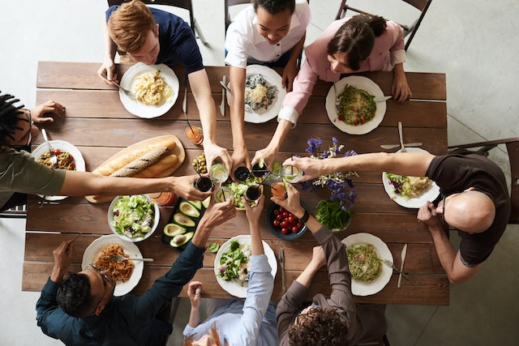

Head Chef
Bio: Mr. Rayan, our Main Chef, brings a decade of culinary expertise to Vito's Cafe, including two years of dedicated service. With a passion for crafting exquisite dishes.
Head Baker
Bio: Chef Maria, our Head Baker, boasts 12 years of baking expertise, delivering delectable pastries and bread crafted with the finest ingredients that define Vito's Cafe's bakery excellence.

Beverage Maestro
Bio: Chef Roberto, our Beverage Maestro with 15 years of experience, is the creative genius behind our signature coffee blends and specialty drinks..
Grill Master Turned Baker
Bio: Chef Luna, a former Grill Master with 8 years of culinary experience and 3 years at Vito's, now brings her unique fusion of grilling flavors to our bakery department at Vito's Cafe
In the year 2010, Vito's Cafe embarked on a journey that would redefine the way people enjoy bakery snacks and beverages. With a passion for delivering culinary excellence and a warm, inviting atmosphere, we set out to create a haven for food enthusiasts and coffee connoisseurs alike. Our story began with a simple goal: to craft delectable bakery treats and serve the finest coffee and tea to our valued patrons.
Over the past decade, Vito's Cafe has become synonymous with quality and innovation. With a relentless dedication to perfecting our craft, we've honed our recipes to create a menu that boasts a wide array of bakery snacks and beverages, each crafted with precision and love. Our commitment to sourcing the finest ingredients ensures that every bite and sip is a delightful experience, one that keeps our customers coming back for more.

Beyond being a place to grab a quick snack or a cup of coffee, Vito's Cafe has evolved into a cherished destination for friends, families, and solo adventurers. Our cozy ambiance, paired with the aroma of freshly baked goods, provides a welcoming environment where memories are made. Whether it's a casual catch-up with friends or a quiet moment of solitude with a book and a latte, Vito's Cafe has been there to enhance those special moments.
As we reflect on our journey since 2010, we are excited about the future of Vito's Cafe. We remain committed to innovation, sustainability, and the pursuit of culinary excellence. Our story continues, as we look forward to serving our beloved community and welcoming new faces to our cafe, where delicious bakery snacks and the finest coffee and tea await. Join us on this ever-evolving adventure in taste and tradition.
copyright © 2023 Eranga madhushan.All rights reserved.